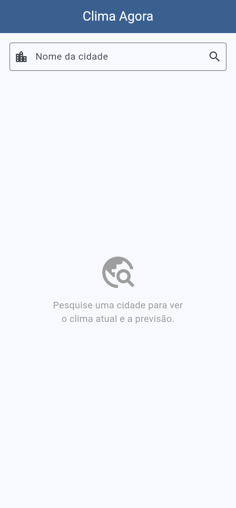
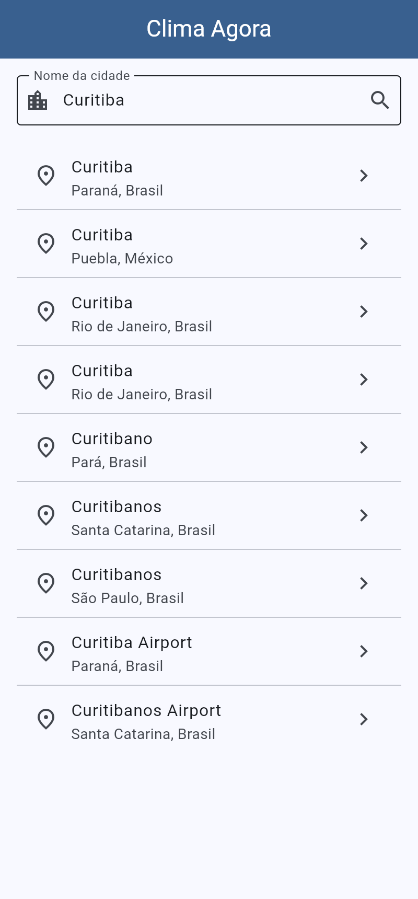
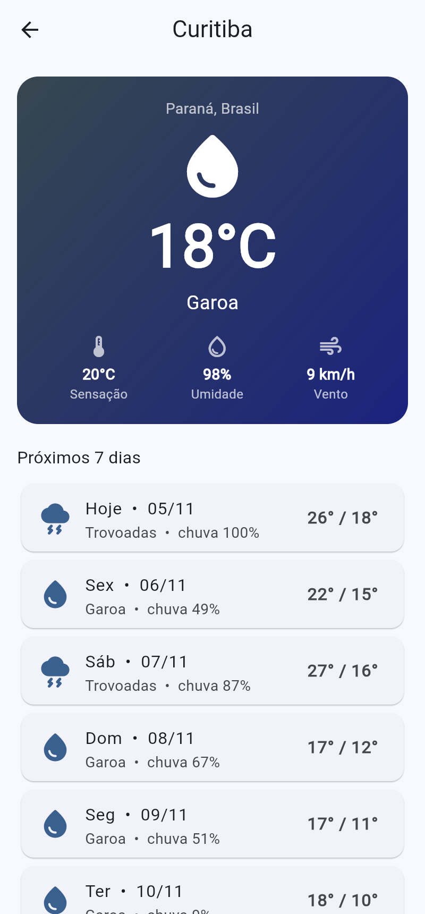
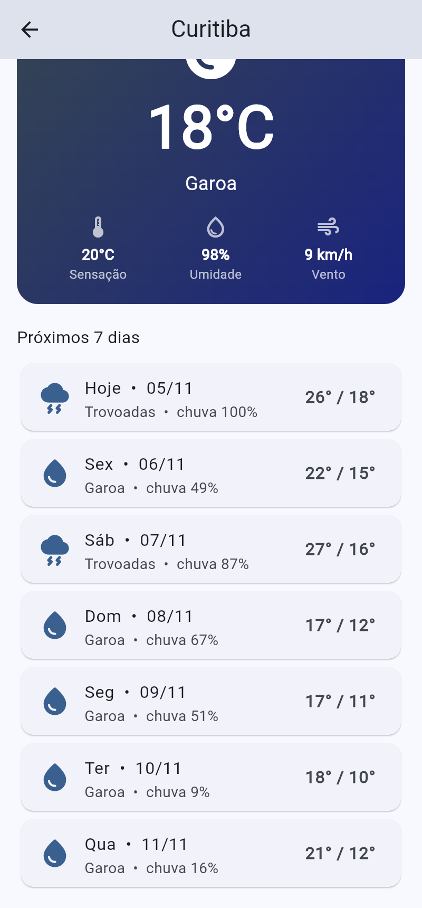
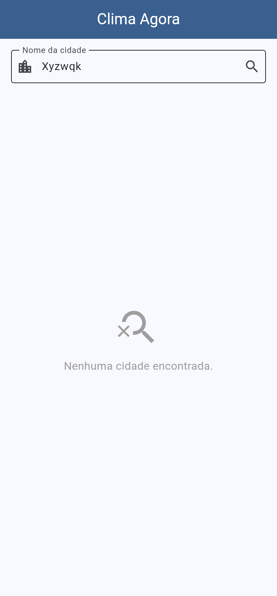
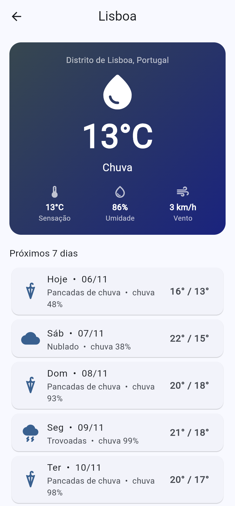

Aplicativo Flutter consumindo uma API REST externa
Aluno: Luan Ribeiro
Repositório GitHub: https://github.com/luanribeiro199/app_clima_flutter
Open-Meteo — API meteorológica gratuita e de código aberto, sem necessidade de chave de acesso.
Site / documentação: https://open-meteo.com/en/docs
| Endpoint | Endereço | Uso no app |
|---|---|---|
| Geocoding API | https://geocoding-api.open-meteo.com/v1/search | Busca cidades pelo nome e obtém latitude/longitude |
| Forecast API | https://api.open-meteo.com/v1/forecast | Clima atual e previsão diária de 7 dias |
GET assíncrono na Geocoding API e lista os resultados.fromJson) e exibido: temperatura, sensação térmica, umidade, vento e previsão de 7 dias com chance de chuva.http, query parameters, verificação de statusCode e timeout.jsonDecode e classes de modelo (Cidade, Previsao, ClimaAtual, PrevisaoDia).Future, async/await, FutureBuilder (carregando / erro / dados) e RefreshIndicator.ListView, Card, ListTile, navegação entre telas e tratamento de lista vazia e falha de rede.




